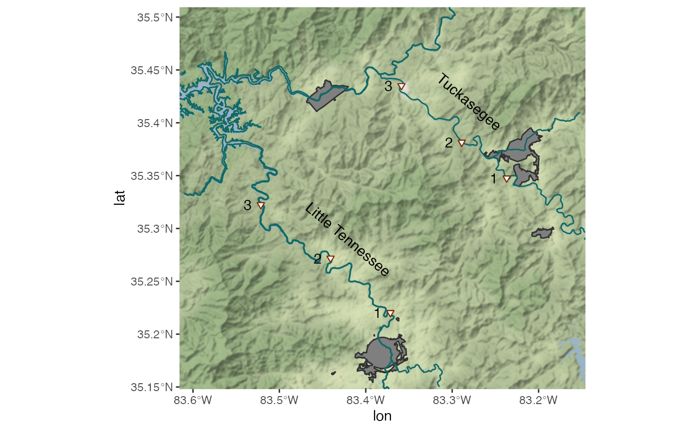

map_study_area.Rmd
library(dplyr)
#>
#> Attaching package: 'dplyr'
#> The following objects are masked from 'package:stats':
#>
#> filter, lag
#> The following objects are masked from 'package:base':
#>
#> intersect, setdiff, setequal, union
library(sf)
#> Linking to GEOS 3.8.1, GDAL 3.1.4, PROJ 6.3.1
library(ggplot2)
library(ggmap)
#> Google's Terms of Service: https://cloud.google.com/maps-platform/terms/.
#> Please cite ggmap if you use it! See citation("ggmap") for details.
read_sp_data <- function(.dsn, .layer){
sf::st_transform(sf::st_read(dsn = .dsn, layer = .layer), 2264)
}
rivers <- read_sp_data(params$inputs$hydro, 'MajorHydro')
#> Reading layer `MajorHydro' from data source `/Users/bsaul/Dropbox/Research/projects/elktoeChemistry/extdata/MajorHydro/MajorHydro.shp' using driver `ESRI Shapefile'
#> Simple feature collection with 3404 features and 5 fields
#> geometry type: LINESTRING
#> dimension: XY
#> bbox: xmin: -84.29812 ymin: 33.83982 xmax: -75.45998 ymax: 36.58755
#> geographic CRS: WGS 84
munip <- read_sp_data(params$inputs$munip, 'MunicipalBoundaries') %>%
filter(CountyName %in% c("JACKSON", "MACON", "SWAIN"))
#> Reading layer `MunicipalBoundaries' from data source `/Users/bsaul/Dropbox/Research/projects/elktoeChemistry/extdata/MunicipalBoundary_SHP/MunicipalBoundaries.shp' using driver `ESRI Shapefile'
#> Simple feature collection with 551 features and 25 fields
#> geometry type: MULTIPOLYGON
#> dimension: XY
#> bbox: xmin: 491681.5 ymin: 34700.65 xmax: 3018438 ymax: 1023767
#> projected CRS: NAD83 / North Carolina (ftUS)
sites <- data.frame(
river = c(rep('Tuck', 3), rep('LiTN', 3) ),
site = rep(1:3, 2),
landmark = c("Dillsboro", "Barker's Creek", "Whittier Post Office",
"Franklin Dam", "Rosecreek Bridge", "Needmore Swinging Bridge"),
lat = c(35.347642, 35.381479, 35.435096, 35.220284, 35.271884, 35.322444),
lon = c(-83.236917, -83.288928, -83.358732, -83.371543, -83.440744, -83.521481)
)
pnts <- st_sfc(geom = st_multipoint(x = cbind(sites$lon, sites$lat)))
sites$geom <- pnts
st_crs(sites$geom) <- 4326
sites$geom <- sites$geom %>% st_transform(2264)
box <- st_bbox(sites$geom) %>% st_as_sfc()
bbox <- st_buffer(box, dist = units::set_units(8, "km"))
riv <- st_intersection(bbox, rivers$geometry)
mun <- st_intersection(bbox, munip$geometry)
riv <- riv %>% st_transform(4326)
mun <- mun %>% st_transform(4326)
sites$geom <- sites$geom %>% st_transform(4326)
background <- get_stamenmap(
matrix(attr(riv, "bbox"), ncol = 2),
maptype = "terrain-background")
#> Source : http://tile.stamen.com/terrain-background/10/274/403.png
#> Source : http://tile.stamen.com/terrain-background/10/275/403.png
#> Source : http://tile.stamen.com/terrain-background/10/274/404.png
#> Source : http://tile.stamen.com/terrain-background/10/275/404.png
#> Source : http://tile.stamen.com/terrain-background/10/274/405.png
#> Source : http://tile.stamen.com/terrain-background/10/275/405.png
river_label_pos <- tibble(
label = c("Tuckasegee", "Little Tennessee"),
lat = c(35.42, 35.29),
lon = c(-83.28, -83.42)
)
ggmap(background) +
geom_sf(
data = mun,
color = "grey20",
fill = "grey50",
inherit.aes = FALSE
) +
geom_sf(
data = riv,
color = "#116966",
fill = "blue",
inherit.aes = FALSE
) +
geom_sf(
data = sites,
aes(geometry = geom,
shape = river),
color = "#7f2b04",
fill = "white",
shape = 25,
alpha = 1,
inherit.aes = FALSE
) +
geom_text(
data = sites %>% mutate(lon = lon - 0.015),
aes(label = site)
) +
geom_text(
data = river_label_pos,
aes(label = label),
angle = 320,
color = "black"
) +
guides(
color = FALSE,
shape = FALSE
) ->
p
#> Coordinate system already present. Adding new coordinate system, which will replace the existing one.
p
ggsave(
filename = params$output$map,
plot = p,
height = 4, width = 4
)